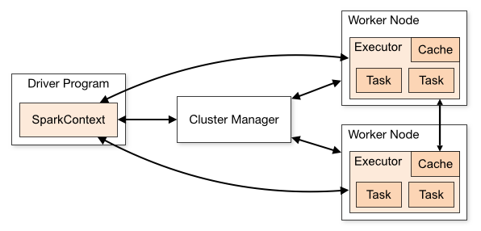

如何处理 YARN 集群上 Spark 应用的依赖冲突问题？
本文主要介绍 Spark 应用提交到 YARN 集群上可能遇到的依赖冲突问题，以及探讨它对应的解决办法，并最终给出建议解决方案。
前言
近期，我在将本地打包好的 Spark 应用部署到 YARN 集群时，有遇到这样一个问题：
通过 spark-submit 以 cluster 模式提交应用后，应用报错提示类似这样的信息： ** NoSuchMethodError **xx org.yaml.snakeyaml.xx **。
有一定开发经验的同学可能会立马意识到，这和 ** NoClassDefFoundError ** 报错信息类似，由于编译时 compile-time 代码无问题，在运行时 runtime 出现这样的报错，则大概率是运行时 classpath 类文件问题，可能是依赖版本不一致。
问题定位
1. Spark 应用的执行模式: client vs cluster
为定位 YARN 集群上执行 Spark 应用出现的问题，我们需先了解一下 Spark 应用在 YARN 集群上的执行模式，谈论的集群管理器（Cluster Manager）类型为 Hadoop YARN。
在使用 spark-submit 提交 Spark 应用时，将 --master 指定为 yarn ，连接 YARN 集群，我们需通过 --deploy-mode 配置来指定应用的执行模式，可选项为: client 或 cluster，这两种执行模式的主要区别在于 Driver 程序（SparkContext）所处位置。
client执行模式：Driver 程序位于 Spark YARN client，这种执行模式下，Driver 程序可运行于本地机器，用于监控特定作业的执行状态，但一旦本地机器 Driver 出问题，则相应的整个应用也会失败，且还需要考虑 Driver 与 worker 节点的网络通讯延迟问题。cluster执行模式: Spark YARN client 提交应用后，Driver 会在某一 YARN 容器中启动（可与 Executor 一起），客户端提交应用后便可离线。

在生产环境中，一般地，为了减少 Driver 和 Executors 之间通讯的网络开销，我们会使用 cluster 模式进行应用部署，此时，Spark 以一组独立进程的形式运行。
由于集群上本身已经包含了许多 Spark 和 Hadoop 的依赖，因此，在对已开发 Spark 项目应用进行打包时，为了减小 jar 包的大小，可选择 jar 插件的打包方式。而后在通过 spark-submit 提交应用时，通过 --jars 和 --packages 来进行应用的依赖管理。其中：
--jars: 多个依赖项以逗号隔开，每个依赖项由 URL 描述，支持的 URL 模式有file,hdfs,http,https,ftp, 以及local本地模式；指定的依赖项会自动传输到集群上，导入到 driver 和 executors classpath 中。--packages: 可指定由逗号隔开的 Maven 坐标，同时会处理相应的所有传递依赖。额外的 Maven 还可通过--repositories进行指定。
e.g.
1 | ./bin/spark-submit \ |
2. 依赖冲突问题
YARN 上 Spark 应用运行，执行模式为 cluster 情况下，集群管理器将根据应用需要启动若干 YARN 容器（由 spark-submit 的参数指定），Driver 和 Executor 进程会运行于这些容器中，且会加载集群中 spark jars 目录（e.g. /usr/hdp/current/spark2-client/jars/）下的依赖到类路径中，后续应用执行使用的依赖项则会优先从此加载。因此，如果该路径下包含了不符合应用需要版本的依赖项时，则极大可能出现依赖冲突问题。
解决方法
为了解决 YARN 上 Spark 应用的依赖冲突问题，我们可采取这样两种策略：1、将项目打成 uber jar 包，包含项目需要的所有依赖，以使项目运行时优先使用该项目 jar 中包含的依赖项；2、通过 Spark 提供的一些配置项覆盖指定依赖项，使应用运行所在节点优先加载指定版本的依赖。
1. 使用 shade 插件将项目打包成 uber jar
Maven 提供了 Shade 插件，可将项目工程打包成 uber jar 包，即 jar 中包含依赖，且能进行一些额外处理，如重命名依赖等。
Shade 插件只有单个目标 goal，shade:shade 绑定于 package 阶段，用于创建出一个 shaded jar 包。
配置使用 Shade 插件示例:
1 | <project> |
详细的 shade 插件使用见： https://maven.apache.org/plugins/maven-shade-plugin/index.html。
例如，可通过添加 ManifestResourceTransformer 配置，来创建可执行 jar 包，即指定 jar 包的 mainClass。
1 | ... |
2. 使用 spark-submit 提供的配置项对目标依赖进行版本覆盖
我们上文已提到，Spark driver 及 executor 启动后，会优化加载集群安装路径 jars/ 目录下的依赖，因此，我们需要通过一些配置，让 Spark 优先选择我们指定的版本的依赖。
从 spark 文档关于运行时环境（Runtime Enviroment）的配置可以找到以下相关内容：
| 属性名 | 默认值 | 说明 |
|---|---|---|
| spark.driver.extraClassPath | （none) | 用于配置前置（prepend）到 driver classpath 的额外 classpath 项 Note: 在 client 模式下，由于 driver JVM 已启动，该配置不能通过 SparkConf 进行配置，请使用 --driver-class-path 属性配置。 |
| spark.driver.userClassPathFirst | false | (实验性) 决定在 Driver 加载依赖依赖时，是否优先选择用户添加的依赖版本。目前该配置为实验性功能。且只能在 cluster 模式下使用。 |
| spark.executor.userClassPathFirst | false | (实验性) 功能和上述 driver 的类似，只不过应用在 executor 实例上。 |
| spark.executor.extraClassPath | (none) | 用于配置前置（prepend）到 executor classpath 的额外 classpath 项。| 该配置主要用于兼容旧版本 spark 而存在，用户通常不应该设置该配置。 |
假设，我们的 Spark 应用有一依赖项，e.g. snakeyaml，在 Spark 集群 jars/ 目录下版本为 1.12，而我们应用需要 1.24 版本，当应用打成 jar 包进行部署时，如不做一定有效配置，则应用在运行时会出现依赖冲突问题。
根据上述运行时环境配置项，我们可这样解决该依赖冲突问题：
配置 driver 和 executor 的额外 classpath 项
1
2
3
4
5
6
7
8
9
10
11
12
13
14# e.g.
./bin/spark-submit \
--master yarn \
--deploy-mode cluster \
--driver-memory 5g \
--executor-memory 10g \
--num-executors 6 \
--executor-cores 8 \
--class com.rovo98.example.SparkApplication \
--jars /usr/rovo98/ex/deps/snakeyaml-1.24.jar \
--files /usr/rovo98/ex/conf/application.yml \
--conf spark.driver.extraClassPath=snakeyaml-1.24.jar \
--conf spark.executor.extraClassPath=snakeyaml-1.24.jar \
/usr/rovo98/ex/xxxx-spark-app.jar配置 driver 和 executor 的用户 classpath 优先项
1
2
3
4
5
6
7
8
9
10
11
12
13
14# e.g.
./bin/spark-submit \
--master yarn \
--deploy-mode cluster \
--driver-memory 5g \
--executor-memory 10g \
--num-executors 6 \
--executor-cores 8 \
--class com.rovo98.example.SparkApplication \
--jars /usr/rovo98/ex/deps/snakeyaml-1.24.jar \
--files /usr/rovo98/ex/conf/application.yml \
--conf spark.driver.userClassPathFirst=true \
--conf spark.executor.userClassPathFirst=true \
/usr/rovo98/ex/xxxx-spark-app.jar
Notice: 由于 userClassPathFirst 属性为实验性配置项，因此，在实践中，我一般选择使用 extraClassPath 配置项。
总结
实际上，对于这个 YARN 上 Spark 应用依赖冲突问题，如果不需要考虑项目打包后 jar 的大小因素的话，将项目打包成 uber jar，则大抵不会遇到这问题。当然，为了减少 jar 传输的开销，压缩 jar 包的大小是有必要的，毕竟有的项目打包后可能动辄几百兆，也不方便对 jar 包后续的修改（如 class 文件、配置文件的替换等）。
References
- https://blog.knoldus.com/cluster-vs-client-execution-modes-for-a-spark-application/
- https://spark.apache.org/docs/latest/running-on-yarn.html#launching-spark-on-yarn
- https://hadoopsters.com/2019/05/08/how-to-override-a-spark-dependency-in-client-or-cluster-mode/
- https://spark.apache.org/docs/latest/configuration.html#runtime-environment